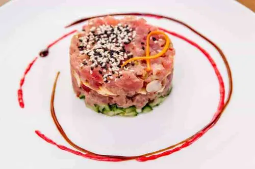

Ingredientes
- 300 g de atún rojo fresco
- 1 aguacate maduro
- 1 cebolleta
- 1 cucharada de alcaparras
- 2 cucharadas de salsa de soja
- 1 cucharadita de aceite de sésamo
- Zumo de 1/2 limón
- Cebollino, sal y pimienta
Preparación
- Corta el atún en dados pequeños y ponlo en un bol frío.
- Pica finamente la cebolleta, las alcaparras y el cebollino.
- Mezcla la soja, el aceite de sésamo, el zumo de limón, la sal y la pimienta.
- Añade el aliño y los ingredientes picados al atún y mezcla con cuidado.
- Corta el aguacate en dados y colócalo en la base del plato con ayuda de un aro.
- Pon el atún encima, retira el aro y sirve enseguida.